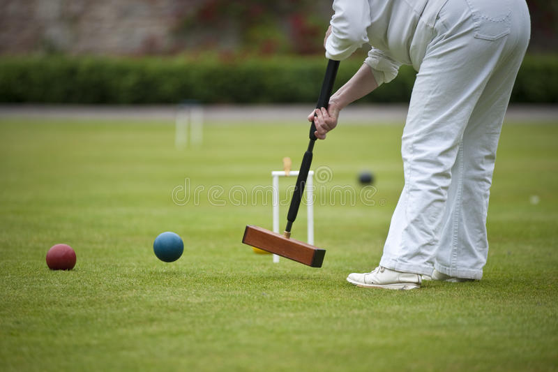

Krocket är ett av de klassiska spelen i folks trädgårdar. Man kan spela 2-6 personer på en vanlig gräsmatta. Målet är att slå sitt klot fram och tillbaka på en bana med tio bågar, längs en given rutt. Den som kommer först i mål vinner.
 Det gäller att ha siktet rätt vid krocketspel!
Spelet har genomgått stora växlingar både beträffande spelregler och popularitet hos allmänheten. Det har sitt ursprung i England, där det var känt redan under medeltiden och varifrån det spreds till södra Frankrike och över kontinenten. På 1860- och 1870-talen stod det på sin höjd av popularitet i Storbritannien och spreds därifrån till kolonierna över hela världen. En djup reaktion kom dock snabbt, och efter 1875 föll det nästan i glömska för att under tidigt 1900-tal åter komma i en blomstringsperiod.
Tävlingar arrangerades i England av United old England croquet association, och årligen tävlades om mästerskap för herrar och damer, både i enkelspel och par. Även i Sverige var spelet mycket populärt kring sekelskiftet 1900 och spelades "överallt" vid sommarnöjena. Där kom det dock inte under ledning av någon organisation, och organiserade tävlingar förekom inte.
Texten är hämtad från Wikipedia.